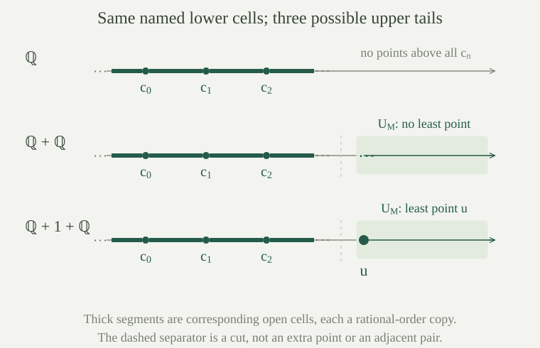

Throughout, structures are nonempty. For a complete satisfiable theory \(T\) in a countable language, with an infinite model, write the number of countable models as \(I(T,\aleph_0)\): this is the cardinality of the set of isomorphism classes of countably infinite models of \(T\). Completeness and the countable-model argument ensure that such models exist and that every model of \(T\) is infinite.
This is a set-sized count. Replace the carrier of each countably infinite model by \(\mathbb N\); the interpretations of the countably many symbols then form a set, and isomorphism is an equivalence relation on that set. The value \(I(T,\aleph_0)=1\) is exactly countable categoricity.
Let \(L_*\) contain the strict-order symbol \(<\) and constant symbols \(c_0,c_1,\ldots\). Define the increasing-sequence order theory \(T_*\) by the axioms for a dense linear order without endpoints, together with
Transitivity gives \(c_i<c_j\) whenever \(i<j\), so the names have distinct interpretations. The rational order, with \(c_n=n\), is a model. Every model is infinite. For the next several blocks, a model means a model of \(T_*\), and \(c_n\) denotes its interpreted value.
Every \(L_*\)-formula is equivalent modulo \(T_*\) to a Boolean combination of equality and strict-order comparisons between its free variables and finitely many named constants. Consequently \(T_*\) is complete. More generally, adjoining any set of constant symbols gives quantifier elimination for every theory containing the translated dense-order axioms.
A formula is a finite expression, so only finitely many constants occur in it. List the distinct names as \(c_{i_0},\ldots,c_{i_{m-1}}\). Replace those constants by additional free variables \(y_0,\ldots,y_{m-1}\), retaining the original quantified variables and avoiding capture. Induction on terms and formulas shows that interpreting these new free variables by the listed constants recovers the original truth value. This is the same constant-to-variable translation used for finite parameter types.
Apply quantifier elimination for the original order language to the translated formula. Its quantifier-free result uses only equality and order between free variables. Substitute the listed constants back. This proves the formula assertion without assuming a new quantifier-elimination theorem for the enlarged language. The same construction uses only the finite set of names occurring in the formula, so it works for any set of additional constants and any theory containing the translated dense-order axioms. Completeness requires the further check of constant comparisons below.
For a sentence, the resulting comparisons concern constants alone. The axioms fix all of them: \(c_i=c_j\) holds exactly when \(i=j\), and \(c_i<c_j\) exactly when \(i<j\). Every model therefore assigns the same truth value to the sentence. Since the rational model exists, this proves completeness.
For a model \(M\), define its upper tail by
This set is a final segment: if \(x\in U_M\) and \(x<y\), transitivity gives \(y\in U_M\). A point is an upper bound of the sequence in the non-strict sense exactly when it belongs to \(U_M\). Indeed, if every \(c_n\le x\), then \(c_n<c_{n+1}\le x\). Thus \(U_M\) is empty exactly when the named sequence is unbounded above.
The alternatives are: \(U_M\) is empty; it is nonempty with no least point; or it has a least point. These alternatives are preserved by every \(L_*\)-isomorphism, because such an isomorphism preserves order and every individual name.
Every point outside \(U_M\) lies in exactly one of the sets
Each displayed open interval, with its induced order, is a nonempty dense linear order without endpoints. If \(M\) is countable, each such interval is countable.
For \(x\notin U_M\), choose the least \(k\) with \(x\le c_k\). If \(k=0\), then \(x<c_0\) or \(x=c_0\). If \(k=n+1\), minimality gives \(c_n<x\), so \(x\) lies in \((c_n,c_{n+1})\) or equals \(c_{n+1}\). Strict increase makes these cells disjoint.
Density gives a point in every interval \((c_n,c_{n+1})\), and the absence of a left endpoint gives a point below \(c_0\). Density is inherited by an interval. Given a point inside an interval, apply density between it and the relevant finite boundary to find a smaller or larger interior point; below \(c_0\), use the absence of a left endpoint for the smaller point. Thus there are no endpoints within any cell. A subset of a countable set is countable.
If \(U_M\) is nonempty with no least point, its induced order is a dense linear order without endpoints. If it has a least point \(u\), then \(U_M\setminus\{u\}\) is a nonempty dense linear order without endpoints. These orders are countable when \(M\) is countable.
The final-segment property retains every point between two tail points. There is no greatest point, since the ambient order has no right endpoint. If \(U_M\) has no least point, each member has a smaller member: otherwise it would be least in the linear order.
If \(u\) is least, the ambient order supplies a point above \(u\), so the tail with \(u\) removed is nonempty. For any \(x>u\), density supplies \(y\) with \(u<y<x\); finality puts \(y\) in the tail. This gives no left endpoint after removing \(u\). Density and the lack of a right endpoint follow as before.
Two countable models of \(T_*\) are isomorphic if and only if their upper tails have the same one of the three alternatives in .
An isomorphism preserves the alternative by . Conversely, match \(c_n^M\) with \(c_n^N\) for every \(n\). By , the open intervals below the named points are countable dense orders without endpoints. The countable dense-order isomorphism theorem supplies an order isomorphism from \((-\infty,c_0^M)\) to \((-\infty,c_0^N)\) and, separately for every \(n\), from \((c_n^M,c_{n+1}^M)\) to \((c_n^N,c_{n+1}^N)\).
If both tails are empty, nothing remains. If both are nonempty with no least point, apply the same theorem to the two tails using . If both have least points, match those points and apply the theorem to the tails with those least points removed.
Glue these maps on the disjoint cells. Each component is a bijection onto its corresponding cell, and the partition includes every point, so the glued function is bijective. It preserves order within a cell. It also preserves order between cells: the initial interval precedes \(c_0\), each \(c_n\) precedes its following interval and \(c_{n+1}\), and every tail point follows all those cells. Its inverse has the same property. The function fixes every named constant in the required sense and is therefore an \(L_*\)-isomorphism.
There are countable models of \(T_*\) with each of the three tail alternatives. Explicit carriers are
where an ordered sum keeps the given order in each disjoint block and places every point of an earlier block before every point of a later block. The symbol \(1\) denotes a single point. In all three structures, interpret \(c_n\) as the rational number \(n\) in the first rational block.
Each carrier is countable. Its block order is a strict linear order. Within a rational block, density supplies a point between distinct points. Between two blocks, a point of the lower rational block can be increased while staying below every point of the higher block. For the singleton-to-final-block case, decrease the given point of the final rational block. These cases prove density across all joins. The first and last rational blocks have no endpoints, so neither does the entire sum. The named sequence is strictly increasing.
The natural numbers are cofinal in the rational order: write a rational as \(a/b\), where \(a\in\mathbb Z\) and \(b\) is a positive integer, and choose a natural number larger than \(|a|+1\). Thus no point in the first rational block is above every \(c_n\). In the one-block order the tail is empty. In \(\mathbb Q+\mathbb Q\), the tail is precisely the second rational block, with no least point. In \(\mathbb Q+1+\mathbb Q\), the tail is the singleton followed by the last rational block, and the singleton is its least point.

The complete theory \(T_*\) has exactly three countably infinite models up to isomorphism. In particular, \(I(T_*,\aleph_0)=3\).
Completeness was proved in . Every tail has exactly one of the three alternatives. By , models with the same alternative are isomorphic. The three explicit representatives realize all alternatives, and no two of them are isomorphic because the alternative is preserved by isomorphisms.
Is there an \(L_*\)-sentence saying that the named sequence has an upper bound?
No sentence can express this property on all models of \(T_*\). The first representative has no upper bound, and the other two have upper bounds. But completeness says that they agree on every sentence.
The expression \(\exists x\,\bigwedge_{n<\omega}c_n<x\) suggests the property, but its infinite conjunction is not a first-order formula. Every actual first-order sentence mentions only finitely many of the constants.
If a complete satisfiable theory \(T\) in a countable language has finitely many countable models up to isomorphism, then \(T\) is small: every \(S_n(T)\) is countable.
Choose countable representatives \(M_0,\ldots,M_{k-1}\). Every complete \(n\)-type has a realization in some countable model by the countable realization lemma. Move this realizing tuple by an isomorphism into the appropriate representative. Thus the map taking a tuple to its complete type is a surjection
A finite union of finite powers of countable sets is countable. Its image is countable, proving the assertion. The empty tuple is included when \(n=0\).
Let \(T\) be complete and satisfiable, let \(M\models T\), and let \(A\subseteq M\) be finite. Put \(T_A=\operatorname{Th}(M_A)\). For old-language formulas \(\varphi,\psi\) in the same finite context,
Consequently the map from old formula classes to the corresponding \(T_A\)-formula classes is injective. If \(L\) is countable, \(T\) has an infinite model, and \(T\) is not countably categorical, then \(T_A\) is not countably categorical either.
Equivalence modulo \(T\) remains true in every reduct of a \(T_A\)-model, since such a reduct models \(T\). Conversely, suppose \(\varphi\) and \(\psi\) are not equivalent modulo \(T\). Some model of \(T\) has a tuple where their truth values differ. The sentence asserting the existence of such a tuple is therefore consistent with \(T\); completeness makes it true in every model of \(T\), including \(M\). The same tuple witnesses failure of equivalence in \(M_A\), so equivalence modulo \(T_A\) fails.
If \(T\) is not countably categorical, the formula-class criterion gives a finite context with infinitely many \(T\)-formula classes. Their distinct images remain distinct for \(T_A\). The named language is countable, its complete theory has the infinite model \(M_A\), and the same criterion rules out countable categoricity of \(T_A\).
If a complete satisfiable theory in a countable language, with an infinite model, has a model that is both atomic and omega-saturated, then the theory is countably categorical. In particular, an atomic model of a noncategorical such theory is not omega-saturated.
By finite-tuple saturation, every complete finite-tuple type of the theory is realized in the given model, using the empty parameter set. Atomicity says that each realized type is isolated. Hence every complete type is isolated. Apply the isolation criterion for countable categoricity. Countability of the particular atomic saturated model is not needed.
Let \(T\) be complete, satisfiable and small in a countable language, with an infinite model, and suppose \(T\) is not countably categorical. There are three pairwise nonisomorphic countable models of \(T\).
By the saturated-model existence theorem and the atomic-model conclusion, choose a countable atomic model \(P\) and a countable omega-saturated model \(S\). Noncategoricity and the isolation criterion give some nonisolated \(p\in S_n(T)\). Finite-tuple saturation realizes it in \(S\), say by \(\bar a\). Atomicity prevents its realization in \(P\). Thus \(P\) and \(S\) are not isomorphic.
Let \(A\) be the finite set of coordinates of \(\bar a\), and put \(T_A=\operatorname{Th}(S_A)\). By preservation under finite naming, \(S_A\) is omega-saturated. It is countable, so its theory is small. Choose a countable atomic model \(N^+\models T_A\), and let \(N\) be its old-language reduct. This reduct is a countable model of \(T\).
Every formula \(\varphi(\bar x)\in p\), after its variables are replaced by the names of the coordinates of \(\bar a\), is a sentence true in \(S_A\). It belongs to \(T_A\), so the tuple of the corresponding constant values in \(N^+\) satisfies \(\varphi\) in \(N\). Hence \(N\) realizes \(p\), and \(N\not\cong P\).
By , \(T_A\) is not countably categorical. Since \(N^+\) is atomic, says that it is not omega-saturated. If its reduct \(N\) were omega-saturated, the arbitrary finite-constant version of finite naming would make \(N^+\) omega-saturated as well. This version matters: its constant symbols are indexed by \(A\subseteq S\), but their values lie in \(N\); they are not literally the original elements of \(S\). Thus \(N\) is not omega-saturated. Isomorphism invariance of saturation separates \(N\) from \(S\). The models \(P,S,N\) are pairwise nonisomorphic.
A complete satisfiable theory in a countable first-order language, with an infinite model, cannot have exactly two countably infinite models up to isomorphism.
Suppose there were exactly two. By , the theory would be small. Having two nonisomorphic countable models makes it noncategorical. But then produces three pairwise nonisomorphic countable models, a contradiction.
This is Vaught's never-two theorem. The three-model order theory shows that replacing “two” by “three” would make the statement false.